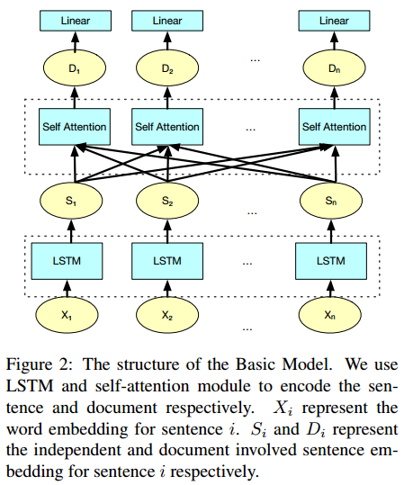
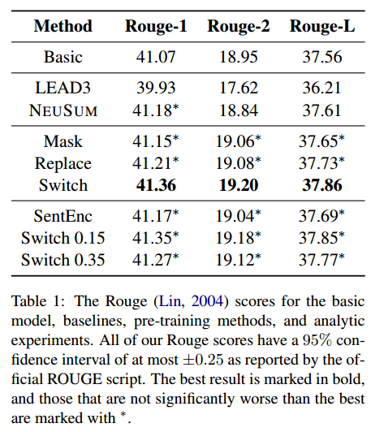

来源：Proceedings of the 57th Annual Meeting of the Association for Computational Linguistics（ACL2019）
一句话不看版：用三个句子级别的预训练任务来预训练encoder，然后通过标注的少量数据微调最后的分类层，对每个句子判断是否被选为摘要。在CNN-DM数据上进行实验验证。
背景
之前的摘要工作大多直接构建一个end-to-end模型来学习该抽取哪些句子。这些方法默认模型能够自动学习句子的全局信息（文档上下文，document context），因此没有显示地建模句子的全局信息。
作者认为这些模型应该很难自动学习文档上下文，而一个好的融合了文档上下文信息的预训练模型对于这个任务会有很大帮助。
最近的单词或者句子的表示学习的方法，也大多使用少量的单词或句子进行表示学习，因此也无法包含文档级别的上下文信息。
因此，本文提出使用自监督的预训练方法来学习融合文档级别上下文信息的句子表示。
模型
Basic Model

基础模型如图2所示，包含两个部分：一个句子encoder和一个文档级别的自注意力模块。
其中，句子encoder由LSTM模型实现，其中每个$X_i$表示一个句子（一个单词序列），LSTM最后时刻的状态作为输出的句子表示$S_i$。然后所有句子之间进行自注意力，来建模句子之间的交互从而捕捉全局信息（本文叫做文档级别上下文）。最后得到document involved的句子表示$D_i$，然后用这个表示取进行分类。
这个思路虽然非常简单，但是也非常自然和有道理。编码之后得到句子的表示，然后由于摘要不能仅仅依靠单个句子的内容去判断，也需要结合文档中的其他句子的信息来判断当前句子是否应该被选为摘要，因此采用了一个自注意力机制来进行句子之间的交互，并根据交互后的表示去进行分类。
Self-supervised Pre-training Methods
上面的Basic Model是整体的基本模型。作者对于其中的encoder部分和自注意力部分提出使用一些其他的任务进行预训练。分别提出如下三个预训练任务：
Mask
首先mask掉一些句子，并将mask的句子加入候选集合$T^m$。训练模型预测每个被mask的位置的正确的句子。具体方法是，将被mask的句子变成一个<unk>符号，然后按照正常的情况使用basic model去计算得到document involved句子表示$D_i$，然后候选集合中的句子都使用basic model中的encoder得到其表示$S^m$。然后对每个候选句子根据相似度进行打分：
$$\theta(i,j) = cos(D_i, S_j^m)$$
然后训练模型时，使用排序损失，来最大化gold句子和其他句子的间隔：
$$l_m = max\{0, \gamma - \theta(i,j)+\theta(i,k)\}$$
其中$\gamma$是超参数，j表示对于mask的位置i，$T^m$中的gold sentence，k表示其他的sentence。
Replace
将某个句子随机替换为其他文档中的某个句子。得到句子表示$D_i$之后，用一个线性层来判断该句子是否被替换。
最后使用MSE计算损失：
$$l_r = MSE(f_r(D_i),y_i^r)$$
其中$y_i^r$是标准标签，指示句子i是否被替换了（0 or 1）。
Switch
该任务于Replace相似，不同之处在于，每个句子随机与本文档中的其他位置的句子交换位置。然后同样使用一个线性层来判断当前位置的句子是否被switch了。
使用MSE计算损失：
$$l_s = MSE(f_s(D_i), y_i^s)$$
其中$y_i^s$是标准标签，指示句子i是否被替换了（0 or 1）。
实验
本文在CNN-DM上进行实验验证。预训练完之后，由于只预训练了encoder和自注意力模块，最上层的摘要抽取过程的分类层还需要微调。因此还是需要使用一些带有标注的数据进行微调。
实验结果如表所示。

其中SentEnc表示只预训练encoder部分，不预训练自注意力部分。
总结
本文的总体思路还是非常make sense的，而且方法也并不复杂。因为是短文，可以看到实验部分的baseline基本上也只比较了一个（NEUSUM）。稍微不足的一点就是还是需要一些标注数据对模型进行微调，并不能做到完全的无监督。可以借鉴文中的句子交互思想，继续往下探索吧~
加油~